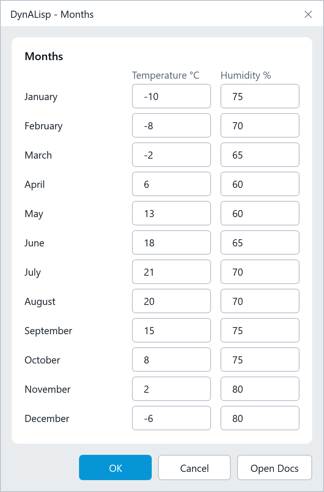

Months
| Ouverte par | Le bouton d'ouverture de Months, sous Climates dans la fenêtre Simulation |
| Requis | AutoCAD 2015 ou plus récent pour Windows |
| Licence | GNU General Public License v3 |
Description
Tapez le climat de chaque mois d'un climat de la Simulation : la température et l'humidité relative de son air, de janvier à décembre. Le bilan mensuel de la Simulation (Monthly) fait passer le détail par ces douze mois, pour voir si l'eau qui y condense en hiver sèche au cours de l'année.
Un climat a soit ses douze mois, soit aucun : sans eux, il est le même toute l'année, à sa Temperature et sa Relative humidity (un intérieur chauffé et gardé à la même humidité). Le bilan mensuel refuse un climat qui a certains mois et pas tous.
Utilisation
- Dans la fenêtre Simulation, sélectionnez le climat sous Climates et cliquez le bouton d'ouverture carré à côté de Months.
- Tapez la température moyenne et l'humidité relative moyenne de chaque mois, puis OK. Sélectionner d'abord plusieurs climats leur donne à tous les mêmes mois.
- Cliquez Monthly dans la fenêtre Simulation.
Fenêtre Months

| Paramètre | Usage |
|---|---|
| Temperature | La température moyenne de l'air dans le mois, en °C (°F dans un dessin impérial). Vide : pas connue. |
| Humidity | L'humidité relative moyenne de l'air dans le mois, de 0 à 100 %. Vide : pas connue. |
- Aucun climat n'est livré avec ses mois : le climat mensuel d'un projet est celui de son lieu, les normales climatiques de la station météo la plus proche pour l'extérieur (sa température et son humidité relative moyennes de chaque mois), les conditions gardées à l'intérieur pour l'intérieur.
- OK donne les mois à chaque climat sélectionné dans la fenêtre Simulation, une fois les valeurs valides (un message sous les cases dit quoi corriger) ; ils sont enregistrés avec les climats par le OK de la fenêtre Simulation, ou par Play, Monthly, Check et Place.... Cancel abandonne les changements, Open Docs ouvre cette page.